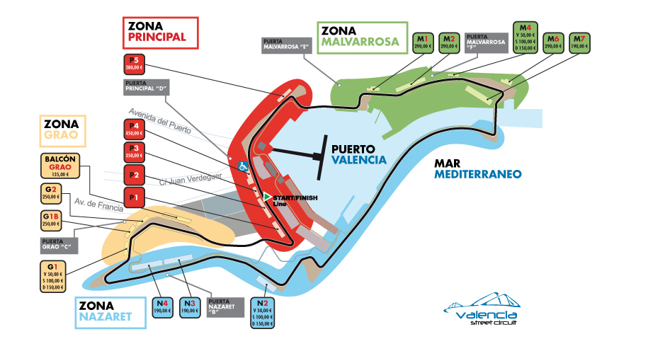
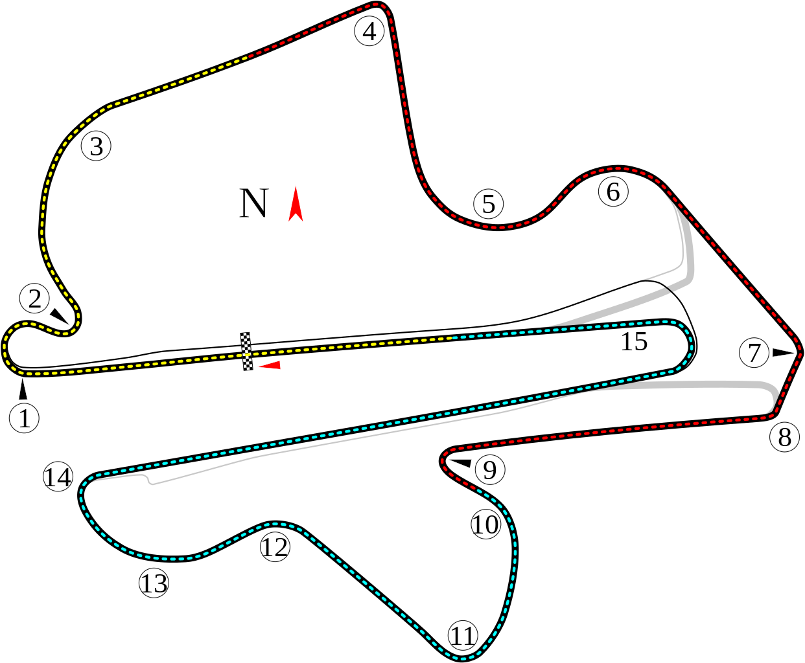
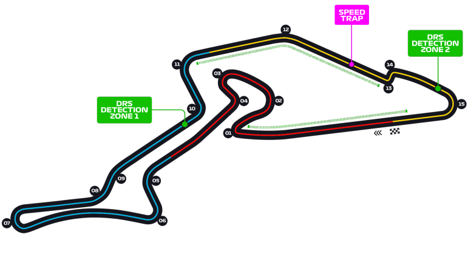

Antiguos circuitos:
Circuito Urbano de Valencia.GP de Europa
El circuito de Fórmula 1 de Valencia tenía una longitud de 5.473 metros y se construyó en el barrio del Grao, junto al puerto de la ciudad. Fue diseñado por el estudio de Hermann Tilke, quien ha realizado obras similares en Sepang, Bahrein, Marina Bay o Yas Marina, y estaba compuesto por 25 curvas.
Acceder a la noticiaCircuito Internacional de Sepang
Concebido para la velocidad y el espectáculo, el circuito internacional de Sepang es uno de los mejores del mundo. Fue construido en el corazón de un inmenso complejo que comprende un hotel, un campo de golf, comercios y otras infraestructuras deportivas y costó más de 50 millones de libras esterlinas
Acceder a la noticiaCircuito de Nurburing.Alemania
Alemania quiere volver a organizar un Gran Premio. La Fórmula 1 no pisa suelo germano desde el año 2020, cuando se celebró en Nürburgring el denominado Gran Premio de Eifel, aunque no forma parte del calendario de forma oficial desde 2019, ya que esa carrera fue un parche para completar el mundial tras la pandemia.
Acceder a la noticiaCircuito de Mugello.Italia

Concebido para la velocidad y el espectáculo, el circuito internacional de Sepang es uno de los mejores del mundo. Fue construido en el corazón de un inmenso complejo que comprende un hotel, un campo de golf, comercios y otras infraestructuras deportivas y costó más de 50 millones de libras esterlinas
Acceder a la noticiaOtros circuitos antiguos:
- Cras mattis tempor
- tristique Sed sed
- arc vel vehicula
- augue aecenas
- sagittis cursus
- Cras mattis tempor
- tristique Sed sed
- arc vel vehicula
- augue aecenas
- faucibus sagittis